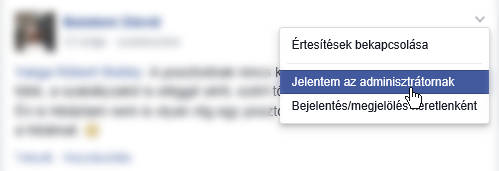

A szabályzat érvényessége
Az alább leírt szabályzat az alábbi csoportokra érvényes:
A csoportspecifikus szabályokat külön fejezetben taglaljuk
Adminisztrátorok
Az adminisztrátorok (továbbiakban „admin”) a csoport felelősei. Ők ügyelnek a szabályok betartására, illetve őket lehet megkeresni a csoportokat érintő
ügyekben.
A csoportok adminisztrátorairól az alábbi hivatkozásokon tudsz tájékozódni:
Fogalommegjelölések
- „poszt” – bejegyzés a csoportban
- „admin” – lásd: Adminisztrátorok
- „komment” – hozzászólás
Alapvető, fontos tudnivalók
- Az alábbi szabályzat bármikor megváltozhat, akár előzetes értesítés nélkül is. A te felelősséged, hogy a mindenkori szabályokkal tisztában legyél és
betartsd azokat. Természetesen változtatás esetén megpróbáljuk felhívni a figyelmet a változásokra.
- Ha szabályzattal ellenkező posztot vagy kommentet észlelsz, jelentsd az adminisztrátornak a Facebook beépített funkcióját használva vagy írj privát üzenetet az egyik adminisztrátornak. Ezzel egyrészt megkönnyíted a munkánkat, másrészt segítesz a csoportot „tisztán tartani” a nem odaillő tartalmaktól.
- Ha a közlendődet nem tudod hová sorolni, kérdezz meg egy admint!
- Szívesen vesszük, ha örülsz a tagságnak, de nem kell egy új postban megköszönni.
- A trágár szavak használata alapvetően nem tilos, hiszen a való életnek is kikerülhetetlen részei, de a mértékre figyelj! Nem mindenki tolerálja ezeket, és téged is minősít. Csoporttársaidról pedig egyáltalán ne írj ilyen hangnemben, mert azt nem tűrjük!
- Adminokat alapvetően nem zárunk ki a csoportból. Vedd figyelembe, hogy az admin is ember, neki is lehet rossz napja!
- Ne posztolj a csoport témájához nem illő tartalmat! Ha valamit mégis szeretnél kirakni, mert annyira közérdekű, feltétlenül egyeztess egy adminnal!
- A más platformokról szóló bejegyzéseket hanyagoljuk. Nem az a cél, hogy a különféle platformok közötti különbségeket kitárgyaljuk (arra van ezer másik csoport).
- Határozottan tilos a csoportba SPAM, vagy bármi módon káros, kéretlen tartalmat küldeni. Aki ilyen tartalmat posztol automatikusan kizárásban részesül, illetve privát üzenetben tájékoztatjuk, hogy miért zártuk ki és mit tegyen ellene, hogy
- Kérlek, ne tégy fel ismétlődő kérdéseket! Nyilván nem elvárás, hogy mindenki tisztában legyen az összes létező bejegyzés, de azt elvárjuk, hogy legalább egy kicsit nézelődj, mielőtt írsz valamit!
- Tilos bárkit megszólni a helyesírás, vagy az ékezetek hiánya miatt. Mindemellett jó színben tüntet fel téged, ha helyesen és ékezetekkel írsz még a telefonon is.
- Határozottan tilos az egyes szolgáltatók által alkalmazott bármilyen zárak, korlátozások feloldására irányuló mindennemű kérés, kérdés, segítségnyújtás. Ha ez ellen vétesz, a postodat töröljük. Ha elégedetlenségednek hangot adsz, vagy megismétled a témát, akkor kizárunk.
- Határozottan tilos a warez minden formájára irányuló mindennemű kérés, kérdés, segítségnyújtás. Ha ez ellen vétesz, a postodat töröljük. Ha edetlenségednek hangot adsz, vagy megismétled a témát, akkor kizárunk. Ha nem tudod mi az a warez, kérdezz meg egy admint, vagy nézd meg a wikipédiában!
- Tilos az ismétlődő kérdésekre sértő, vagy kiparodizáló válaszokat adni. Ha nem adsz értékelhető választ egy ilyen kérdésre, akkor inkább ne írj semmit!
- Tilos a számodra értelmetlen kérdésekre sértő, vagy kiparodizáló válaszokat adni. Ha nem adsz értékelhető választ egy ilyen kérdésre, akkor inkább ne írj semmit!
- Tilos olyan bejegyzések küldése, amik másokból előre jósolhatóan a csoporthoz nem tartozó érzéseket váltanak ki. Tehát például ne közöld a bejegyzésedben, hogy most váltál, beteg a gyerek, sőt semmit, ami nem tartozik szorosan a csoportba!
- Tilos egy posthoz olyan bejegyzést írni, ami a beszélgetést más irányba tereli. Tehát például ne kérdezd meg, hogy lesz-e a Windows 10 Mobile a telefonodra, ha éppen nem ez a téma!
- Tilos kifejezni a sajnálatodat, ha esetleg lemaradtál egy vitáról. Ha ilyet teszel, akkor csak felhívod magadra a figyelmet, és legközelebb jobban figyelünk a tevékenységeidre.
- Határozottan tilos minden reklám elhelyezése a csoportban akkor is, ha a sajátod, és nem minősül SPAM-nak, és nem is káros. Minden esetben egy admin engedélyét kell kérned!
- Admin jogokért ne kuncsorogj! Az adminisztrátorokat mi kérjük fel, ha úgy látjuk, hogy az illető megérdemli.
- Az adminisztrátorok letiltása nem túl jó döntés, hiszen így is ki tudunk rakni a csoportból, viszont neked esélyed sincs ilyen esetben kommunikálni felénk és vica versa.
Kizárással járó vétségek
- Az adminok döntéseit csak akkor véleményezheted, ha az adott döntés postolásra került. És akkor is kizárólag az adott post alatt kommentálhatsz ebben az ügyben.
- Határozottan tilos a csoportban politikai, vallási, faji, gyűlöletkeltő, vagy bárkire nézve sértő tartalmakat közölni!
- Határozottan tilos a csoportban bárkit sértegetni. Ez akkor is tilos, ha esetleg okot adott rá!
- Kizárás jár akkor is, ha valaki rendszeresen vét a szabályzat ellen.
- Kizárható valaki akkor is, ha egyszerre több ponton vét a szabályzat ellen.
- Határozottan tilos a szólásszabadság jegyében, vagy a cenzúra ellen felszólalni. Ez egy csoport, nem a szavazófülke! Ha mégis felszólalsz, akkor több lehetőséged nem lesz.